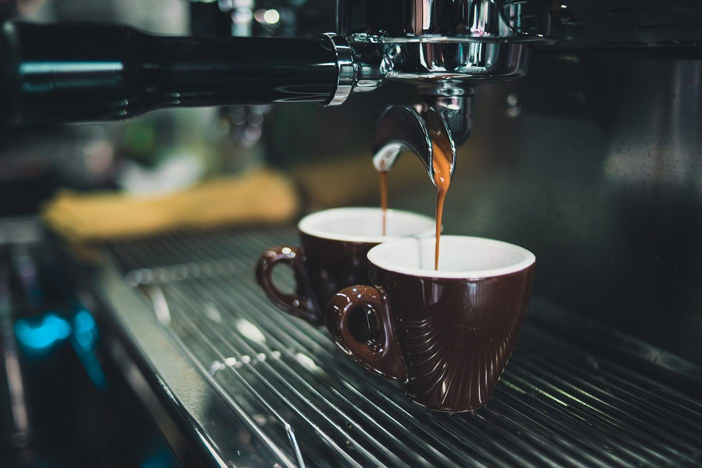

図1 / 全体の配置
部位配置図
ウォータージャグの
六つの部位
コックから水を注ぐ、持ち運びできる給水容器。その部位を、上から順に番号をふって並べました。
このテーマは制作側の連想で、お店の理念・由来とは無関係です。お店の内容は準備中です。
凡例
番号と部位名
- 1
フタ
本体の口をふさぐ部分です。ほこりの混ざりをおさえ、水を足すときに開け閉めします。
- 2
タンク本体
水をためておく大きな容器です。屋外へ運びやすいよう、厚みのある樹脂でできた型が多くあります。
- 3
水位の目盛り
本体の側面に刻まれた線です。残りの量が、外から見て分かるようになっています。
- 4
コック
前面の下寄りについたレバーです。押す、または回すと水が出て、離すと止まります。
- 5
注ぎ口
コックの先の短い出口です。カップや鍋などへ、水を落とします。
- 6
取っ手
本体の側面につく持ち手です。満水でも持ち上げられるよう、手がかかる形になっています。




写真はイメージです。お店のものではありません。